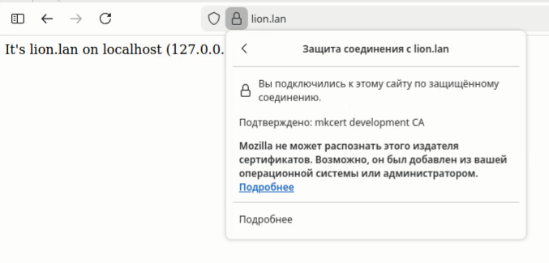
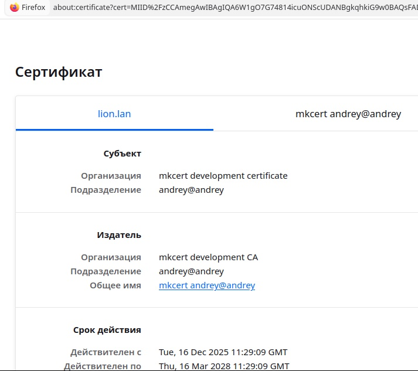

You typically see this help when FastXAMPPSsl failed to automatically update the root certificate. After reading this help, you will be able to understand:
- Do you need to update it at all?
- How to update a certificate from the console
- How to edit your php.ini so that certificate updates occur automatically in the future.
Why update the root certificate at all?
If you have mkcert installed and you added a site to localhost using FastXfmppSSL, the browser should open the site using the https:// protocol, and the browser should consider the site's SSL certificate valid. This does NOT require updating the root certificate. See screenshots of the site displayed on localhost (Firefox browser).

Displaying the mkcert certificate in Firefox 146.0

Example certificate data
Updating the root certificate becomes necessary during development, when you develop multiple sites on localhost and one of your sites makes a request to another on the backend, that is, a PHP script from one site accesses the second site, for example, using PHP curl.
A real-life example (this is the reason the FastXamppSSL utility was created):
1 I'm working on a real project on localhost as part of a rather small Teams.
2 They cut off all internet service except for mobile 2G. And not for just one day.
3 It turns out that the local copy of the site accesses more than one external resource via curl (which terribly slows down local development) and these URLs aren't included in the config files. No one noticed this because no one had any internet issues up until now.
4 MRs with hostnames included in the config file are being blocked because everyone's busy with other tasks, and it's better to focus on the current one and not waste colleagues' time on reviewing it, because it's Q4 and everyone's incredibly busy. And it's not customary to roll out without a review in the company.
5 I quickly create a bunch of local namesakes of the services the project accesses on the local server, but it turns out this isn't enough, because curl refuses to accept the certificates created by mkcert.
Updating the root certificate turned out to be the solution.
How to update a certificate from the console
1 Open `/opt/lampp/etc/php.ini` and find the setting `openssl.cafile`
Sometimes there may be multiple lines; it's important to find the one for which the file specified in this setting exists.
For XAMPP 7.4.28, it's equal to `/opt/lampp/share/curl/curl-ca-bundle.crt`, but there is no guarantee
that it will not change in new versions of XAMPP.
FastXAMPPSsl may create a setting in php.ini:
1930openssl.cafile=/etc/ssl/certs/combined-ca-bundle.crt
/opt/lampp/etc/__php.ini` - this is a backup php.ini file created when installing the FastXAMPPSsl utility.
So, you should find the original certificate file and ensure it exists. After that, you run the following command in the console:
sudo mkdir /etc/ssl
sudo mkdir /etc/ssl/certs
sudo rm /etc/ssl/certs/combined-ca-bundle.crt
sudo cp /opt/lampp/share/curl/curl-ca-bundle.crt /etc/ssl/certs/combined-ca-bundle.crt
Here, instead of `/opt/lampp/share/curl/curl-ca-bundle.crt`, you need to use the path to the certificate file you found.
Next, make sure the file /home/username/.local/share/mkcert/rootCA.pem
Here username is, of course, your Linux username.
In December 2025, mkcert v1.4.4 stored its root certificate there. But things evolve, things change, and perhaps you're reading this help page because mkcert stores its certificate in a different location today.
So, having found your mkcert rootCA, execute
cat /home/username/.local/share/mkcert/rootCA.pem | sudo tee -a /etc/ssl/certs/combined-ca-bundle.crt
Here, replace /home/username/.local/share/mkcert/rootCA.pem with the path to your file.
All you have to do is edit php.ini, leaving the line there:
1930openssl.cafile=/etc/ssl/certs/combined-ca-bundle.crt
sudo /opt/lampp/lampp restart
How to edit your php.ini so that certificate updates occur automatically in the future.
When using FastXamppSsl, root certificate updates should occur automatically. But if you're reading this, that's not happening.
This could be due to unexpected php.ini content for FastXamppSSL and the absence of the file /home/username/.local/share/mkcert/rootCA.pem
You need to edit php.ini so that the settings
1930openssl.cafile=...
In other words, write the lines in your file:
1928#original
1929#openssl.cafile=/opt/lampp/share/curl/curl-ca-bundle.crt
1930openssl.cafile=/etc/ssl/certs/combined-ca-bundle.crt
and delete all other lines that include the substring `openssl.cafile=`
In this case, the value /opt/lampp/share/curl/curl-ca-bundle.crt should be replaced with the path to your original certificate file.
Also, if the new version of mkcert stores its certificate in a location other than /home/username/.local/share/mkcert/rootCA.pem, create a copy of its certificate there.